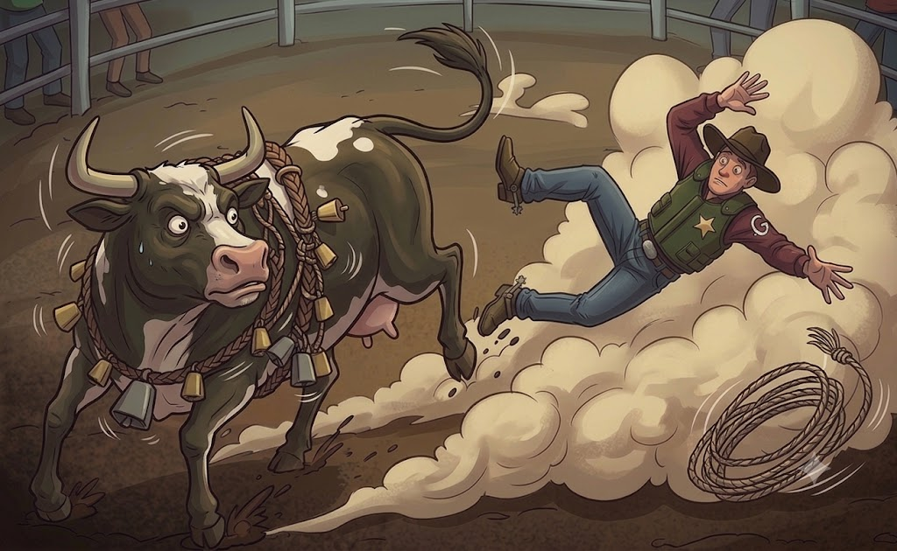

flowchart LR
A[Original post] --> B[Reviewer LLM]
R[Review prompt] --> B
B --> C[List of issues]
A --> D[Corrector LLM]
C --> D
D --> E[Edited post]
Tools, Agents and Harnesses: How to domesticate an LLM
LLMs
AI
Agentic AI

I have been using generative AI in my day-to-day work for at least two years now. For data science and software development, tools like Claude Code and Github Copilot now take on much of my coding work. Meanwhile my own time is spent developing a deeper understanding of the data and domain or thinking about more subtle aspects of problems such as the suitable choices of evaluation metrics for a model.
This certainly wasn’t the case two years ago (or even early last year). When ChatGPT was first released it had some capabilities in writing code but the results were often unpredictable and prone to errors. These models, self-contained but lacking context, also needed constant guidance and corrections to obtain a useful result; it was hard to trust them.
So what has now made them so much more useful?
Two key and related developments are agents and harnesses. These enable an LLM to carry out long-running tasks, autonomously, producing code that is tested and aligns well with the user’s intentions. I like to think of Large Language Models as a bit like untamed animals: powerful but often unpredictible, and unwilling to reliably follow instructions.
I have been confused about these concepts for a while (and sometimes still am depending on who I talk to). It’s an ongoing struggle for me to navigate all the content being produced about AI, and the inconsistent terminology doesn’t help. So this post is an attempt to help me clarify these ideas, which will hopefully be useful to others who are similarly overwhelmed.
Before getting into the details of agents and harnesses though, let’s see how the capabilities of a vanilla LLM can be augmented in a simple way via the concept of a workflow.
Workflows
In Anthropic’s engineering blog they draw a distinction between what they refer to as workflows and agents.
To understand what they mean by a workflow consider the example of using an LLM to edit a blog post.1 We can separate this larger task into two subtasks: a reviewer and a corrector:
- The reviewer is provided with the original post along with a pre-defined prompt that specifies what we want to look out for, e.g., grammatical and spelling errors, issues with the writing style and overall structure, relevance of content and the desired output structure. The final output from the reviewer might be a list of bullet points that summarises the main issues it identified in the post.
- The corrector makes corrections to the post based on the results from the reviewer. It is a separate LLM call provided with both the original post and the list of bullet points from the reviewer.
The figure below illustrates the overall process in the workflow.
We can enhance this workflow further by allowing the LLM to retrieve information from the web. For example, we could enable it to add references to papers, books and other blog pots. Many of these are likely already be in the LLM’s training data, and so one way would be to retrieve these from the LLM itself, but a common issue with LLMs is their tendency to produce inaccurate information, as we see with the increasing proportion of number of academic publications that contain fabricated references. Instead, a more reliable approach is to connect the LLM to a tool that can search the web, retrieving the specific references relevant to the post and incorporating them into the output.
Tools
A tool is a function that an LLM can call to provide it with additional context, for example data on recent events. Every LLM has a so-called knowledge cut-off which defines the most recent date of the data that was used to train the model. This cut-off limits a model’s abilities to produce accurate results that require more current information.
An example of code for a tool is shown below (this assumes a search_journal function for searching a particular academic journal).
def search_web_for_references(paragraph: str, journals: list[str]) -> list[str]:
"""
A tool for extracting references from journals based on a paragraph of text
"""
refs = []
for journal in journals:
relevant_journal_refs = search_journal(paragraph, journal)
refs += relevant_journal_refs
return refs To enable the LLM to make use of this tool we modify the LLM’s system prompt as follows:
system_prompt = """
You are a useful research assistant that provides reliable information on academic literature relevant to a particular body of text.
You have access to a web search tool - `search_web_for_references` that takes a paragraph of text and returns a list of references that
are directly relevant to the information stated in the text.
For each paragraph of text make use of the tool to search for relevant references in the PubMed journal. Only include references that are
required to support claims in the text, or provide useful background context.
Your response should be a list of references, formatted according to APA.
"""The user may make a request to the reference finder LLM as follows:
import requests
def call_llm(user_message: str) -> str:
message = {
"system_prompt": system_prompt,
"user_message": user_message
}
response = requests.post(llm_endpoint, json=message)
return response['content'][0]['messages'][0]Now have three steps in the workflow: (1) reviewer; (2) corrector and (3) reference_finder.
flowchart LR
A[Original post] --> B[Reviewer LLM]
R[Review prompt] --> B
B --> C[List of issues]
A --> D[Corrector LLM]
C --> D
D --> E[Edited post]
E --> F[Reference finder LLM]
F --> T[search_web_for_references tool]
T --> F
F --> G[Post with references]
The use of the reference finder allows the system to search for relevant references rather than make them up, providing a new capability. Importantly the reference finder reduces the risk that the model will invent non-existent references or include ones that are not highly relevant.
A limitation of the workflow approach, even with tools, is that the sequence of steps have been defined from the outset. In this case, that is still a reasonable approach, but there are many other problems where the sequence of tasks must be created dynamically. Ultimately we would like to allow the system to decide for itself which particular decisions it makes; this is done via an agent.
Agents
An agent extends the notion of workflows to enable the system to dynamically select different sequences of tasks, without these being specified by the user at the outset. Let’s consider a different problem: reading Python code and ensuring that it runs and conforms to the PEP-8 conventions. We introduce three tools: a file reader; a linter such as flake8; and an executor (a function that runs the code).
Suppose a user writes the query
Check that the code in `main.py` is runningThen we want the system to read the file called main.py and run it to check for errors, i.e., the system should use the file reader and the executor. How do we do this? One way would be to translate the query into a sequence of unix commands with arguments defined by inputs in the query (such as the file main.py).
If instead the user asks
Can you check that `functions.py` conforms to PEP-8Then we want to use the file reader and the linter.
We see that we cannot know ahead of time the sequence of tool calls a user wishes to execute; instead this is done dynamically. The agent should translate a query into executable code that reads a file and tests it or performs another operation such as executing the linter. This is the essence of an agentic approach.
Achieving this design doesn’t necessarily require AI or LLMs. Intead, we could have created a set of pre-defined rules based on common patterns expected in the text, with the program selecting the appropriate tool based on these patterns. However, LLMs are excellent at uncovering the broad range of patterns in text, so the LLM is used to do this routing instead.
A rough definition of an agent is: LLM + tools + additional context.
Harnesses: domesticating an LLM
Finally we can introduce the notion of a harness. This concept puzzled me until I realised I had been using harnesses all along.
The agent we defined in the previous section was built by creating some additional structure around the LLM: We gave it some tools so that its responses would be accurate and grounded in reliable external information; and we provided some additional context in its prompts so that it would be steered towards our intended outputs and handle the kinds of scenarios that we expect to appear when a user is interacting with the system.
In fact, these elements form what everyone is now referring to as an agent harness (well I actually see different definitions of harnesses but this one seems the most natural and well-motivated)2.
If we take a step back and think about what we are trying to achieve, we want to develop a system that completes tasks without heavy guidance from the user. But how do we do this? LLMs are stochastic so their behaviour is to some extent always unpredictable; this is both a feature of LLMs (they are great at parsing the wildly unstructured data from human language) and a source of frustration for anyone who wants consistent, well-defined results.
It is non-trivial to build an LLM-based system that aligns with what we want, i.e., our intent. Returning to our analogy at the start, an LLM is like an animal that has been captured in the wild while an agent is that same animal with some house-training: it can now follows instructions, behaving in a way that aligns with our intent3. This domestication is achieved via the harness. In more technical language, the use of tools and suitable prompts reduces the stochasticity inherent in LLMs so it produces more deterministic results.
To summarise: the harness is the necessary structure around an LLM that turns it into an agent, capable of solving tasks independently with all the checks in place so we can trust the outputs.
Summary
We have looked at tools, harnesses and agents, and can summarise these in the table below.
| Concept | Explanation | Purpose | Examples |
|---|---|---|---|
| Tool | A function called by a program to perform a specific, well-defined task | Reduce hallucinations and provide accurate responses, connect to external information sources | Loading a file; web search, geocoding |
| Workflow | A pre-defined sequence of tasks performed by a program | Chain multiple tasks together | The essay review and rewriting workflow |
| Agent | A program that takes a user’s query and autonomously decides on a workflow in order to answer the query | Accurately address a user’s query by autonomously making use of tools and workflows | Coding agents; essay review agents |
| Harness | The structure that enables an LLM to become an agent | LLM domestication, i.e., turning an LLM into an agent | The collection of prompts and tools defined in our basic coding agent example |
Some exercises
I found it easier to get my head around these ideas by tinkering with LLMs and seeing how they fail. Once you start introducing some structure in place to guide the LLM, the notion of a harness emerges much more naturally. Here are some things I have tried:
- Start with an LLM and ask it questions that relate to recent events. What do you notice?
- Create a tool for the current time and incorporate it into the prompt.
- Now, think of a type of problem which might involve multiple tools and implement an agent for using these tools.
References
- Schluntz, E., & Zhang, B. (2024, December 19). Building effective agents. Anthropic Engineering.
- Wickham, H. (2026, June 5). What is an agent? Tidy design principles.
- Orrall, A. (2026, May 7). One in 277 PubMed-indexed papers in 2026 shows fabricated references, says analysis. Retraction Watch.
Acknowledgements
Thanks to Michael Couch and Rob Lechte for providing feedback on this post and the helpful suggestions.
Footnotes
I have a gut-reaction against AI-generated writing so everything written here, with the exception of some markdown formatting, is still me, not an AI. If the goal is genuine understanding of a subject, I’m not convinced AI can replace the messy process of exploring deadends, being confused and doing repeated rewrites. But that is a topic for another post.↩︎
To confuse things further, people talk about agent harnesses as well as engineering harnesses. This post focuses on the former.↩︎
This isn’t the most animal friendly analogy.↩︎